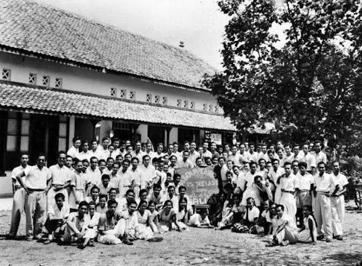

0
Awal Mula Sebuah Visi
Didirikan dengan semangat kebangkitan nasional, SMA Negeri 1 Singaraja mulai menorehkan sejarah sebagai institusi pendidikan menengah atas pertama di kawasan Bali Utara. Berawal dari bangunan sederhana dengan dedikasi pengajar yang luar biasa, sekolah ini dengan cepat menjadi simbol harapan bagi kemajuan intelektual masyarakat lokal.